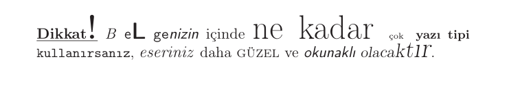

1.17 Yazıtipleri
1.17.1 Giriş
Yazıtipi konusu kodlama, aile, biçem ve boyut olmak üzere dört
alt başlıkta incelenebilir. Kodlama çok teknik bir konu olup amacımız
dışındadır, ancak sadece şunu belirtelim ki kodlama işini LaTeX’de Bölüm 1.6’de bahsettiğimiz fontenc paketi üstlenir. Bu paketi belgenize eklemiş
olduğunuzu varsayarak devam edeceğiz.
Bu yazıda anlatacağımız şeylerden bazıları bir bakıma LaTeX’in
felsefesine aykırı olacak. Nitekim LaTeX, \documentclass komutunda
belirtilen ana yazıtipi boyutuna göre, dipnot ya da başlık gibi ana
yazıtipi boyutundan farklı dizilen şeylerin boyutunu olabilecek en güzel
ve doğru şekilde ayarlar. O yüzden bu konudaki klasik uyarıyı biz de
yineleyelim:

1.17.2 Aile
Yazıtipleri Roman ya da Serif, Sans Serif ve Typewriter olmak üzere üç ailede toplanabilir. Roman ailesi tırnaklı ya da süslü diyebileceğimiz yazıtiplerini, Sans Serif ailesi tırnaksız ya da süssüz yazıtiplerini ve Typewriter ailesi de daktilo yazıtiplerini barındırır.
LaTeX’de her belge sınıfı varsayılan yazıtipi ailesiyle gelir. beamer
sınıfının varsayılan ailesi Sans Serif olup, diğer sınıfların varsayılan
ailesi Roman’dır.
Varsayılan aile \familydefault komutunda saklı olup, \renewcommand
komutuyla değiştirilebilir.
\renewcommand{\familydefault}{\rmdefault}
\renewcommand{\familydefault}{\sfdefault}
\renewcommand{\familydefault}{\ttdefault} Birinci komut sahanlığa yazılırsa, belge sınıfından bağımsız olarak varsayılan aile Roman, ikincisi yazılırsa Sans Serif, üçüncüsü yazılırsa Typewriter olur.
Eğer belgenin tamamının değilde bazı kelime ya da cümlelerin farklı aileden yazılması istenirse –ki genelde böyle kullanılır– aşağıdaki komut ya da bildirimler kullanılır.
Yazıtipi Aileleri
LaTeX’de varsayılan yazıtipi Computer Modern olup, ek bir pakete ihtiyaç duymadan kullanılabilecek yazıtipleri aşağıda gösterilmiştir.
Roman Yazıtipleri
Sans Serif Yazıtipleri
Typewriter Yazıtipleri
Elyazısı
Varsayılan yazıtipleri \rmdefault, \sfdefault ve \ttdefault
komutlarında saklı olup, \renewcommand komutuyla değiştirilebilirler.
\renewcommand{\rmdefault}{<kısaltma>}Burada <kısaltma>, tablolarda belirtilen kısaltmalardır. Örneğin
\renewcommand{\rmdefault}{put}komutu sahanlığa yazıldığında, eğer varsayılan aile Roman ise belgenizin ana yazıtipi Utopia olur.
Eğer tüm belgenin değil, bazı kelime ya da cümlelerin farklı yazıtipinde
yazılması istenirse \fontfamily komutuyla \selectfont komutu
birlikte aşağıdaki şekilde kullanılır.
{\fontfamily{pbk}\selectfont Bookman yazıtipi.} Ana yazıtipi.Varsayılan yazıtipi paket ekleyerek de değiştirilebilir. Bu hem pratiktir hem de bazı paketler matematiksel ifadelerin yazıtipine de etki eder. Bu paketlerin bazıları tabloda gösterilmiştir.
Yazıtipi değiştiren paketler
Bunların dışında beğenebileceğiniz birçok yazıtipini LaTeX Yazıtipi Kataloğu’nda bulabilirsiniz.
1.17.3 Biçem
Metin içinde kelimeleri bazen italik bazen de kalın dizmek isteyebilirsiniz. Bu değişimler aşağıdaki tablodaki komut ya da bildirimlerle yapılır.
Yazıtipi Biçemleri
İzleyen kelime \textit{italik}
harflerle yazılmıştır.
Metnin geri kalan kısmı
normaldir.İzleyen ifade {\slshape {\bfseries eğik kalındır}}.İzleyen ifade \textit{\textbf{italik kalın}}, ama bu
\textsc{\textit{büyük küçük harf değil}}.Eğer vurgulu metin içinde bazı kelimeler tekrar vurgulanırsa bu kelimeler normale döner.
{\em Vurgulu metinde tekrar
vurgu yapılırsa {\em normale}
döner.}LaTeX’de vurgu yukarıdaki gibi yapılsa da altını çizerek vurgu yapmak
isteyen olabilir. Kuyruklu harflerin altı çizildiğinde varsayılan satır
aralığı değiştiğinden vurguyu bu şekilde yapmamanız daha doğrudur. Ancak
illa altını çizmek isterseniz \underline komutunu kullanabilirsiniz.
1.17.4 Boyut
Yazıtipi boyutunu değiştirmek için aşağıdaki bildirimler kullanılır.
Yazıtipi Boyutu Değiştiren Bildirimler
{\Large Büyük} ve
{\scriptsize küçük} harfler.Bu bildirimlerin aynı zamanda satır aralığını da değiştirdiğine dikkat
edilmelidir. Aşağıdaki iki örnekte, \par (paragraf) komutunun
verdiğiniz yere bağlı olarak farklı sonuçlar ürettiği gösterilmiştir.
Doğru kullanım ikincisidir.
{\large
Sokrates: Platon
yalan söyleyecek
aşağıdaki cümlede.}\par{\large Platon: Sokrates
doğruyu söyledi
önceki cümlede.\par}Bu bildirimlerin etkisi belge ana yazıtipi boyutuna bağımlıdır. Mutlak boyutlar aşağıdaki tabloda gösterilmiştir.
Yazıtipleri Mutlak Boyutları
Bağımsız bir yazıtipi boyutu elde etmek için \fontsize ile
\selectfont komutları birlikte kullanılır.
{\fontsize{<boyut>}{<aralık>}\selectfont <metin>}Buradaki <boyut> yazıtipi boyutu, <aralık> ise satır aralığıdır.
İkisinin de ölçü birimi punto (pt) olup, temel kural, aralığın boyutun
\(1.2\) katı olmasıdır.
{\fontsize{30}{36}\selectfont
Yazı tipi boyutu 30 punto,
satır aralığı 36 punto.}Ana yazıtipi boyutu \normalsize komutunda saklı olup, \renewcommand
komutuyla değiştirilebilir.
\renewcommand{\normalsize}{\fontsize{30}{36}\selectfont}Yukarıdaki komutu sahanlığa yazarsanız belgenizin ana yazıtipi boyutu 30 pt, satır aralığı ise 36 pt olur.